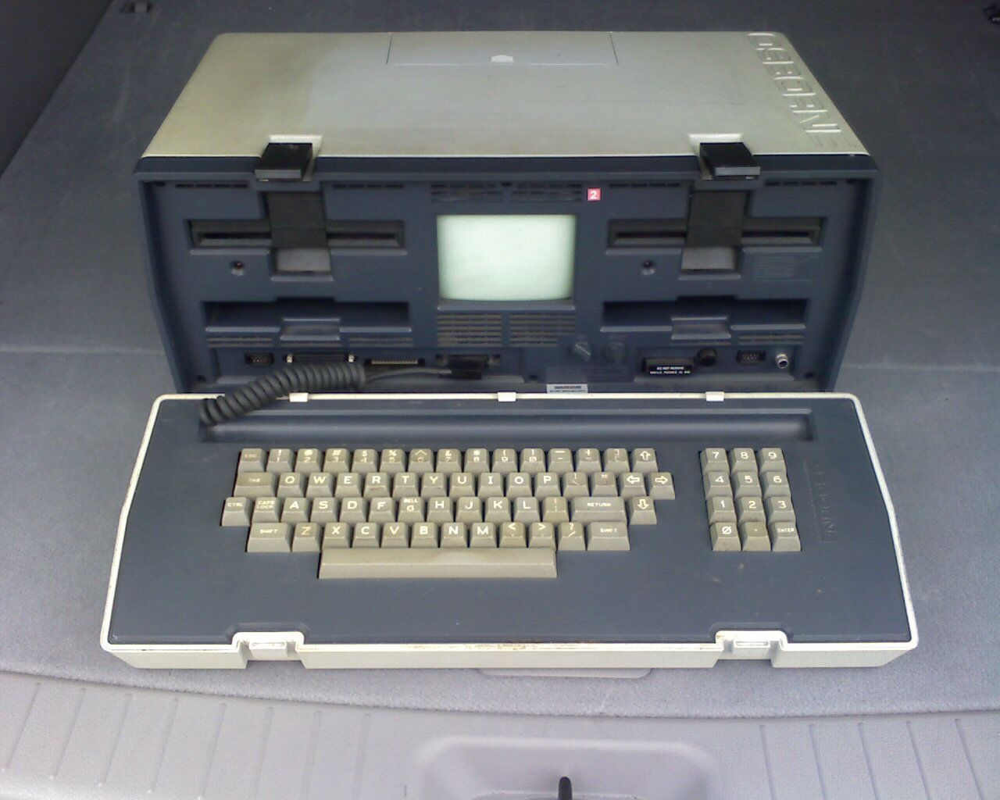

Today, we take it for granted that our computers fit into a slim backpack or even our pockets. But the dream of the "portable office" wasn't born in a Cupertino design lab or a sleek coffee shop in 2024. It was born in 1981, it weighed nearly 25 pounds, and it was housed in a rugged plastic suitcase that felt more like a sewing machine than a supercomputer. Meet the Osborne 1—the spiritual ancestor of every laptop, tablet, and handheld gaming PC currently on the market.
In the early 1980s, computers were desktop-bound behemoths. If you wanted to work, you went to the computer; the computer did not come to you. Adam Osborne, a pioneer in the industry, realized that for many professionals, the real value of a computer lay in its presence at the negotiating table, on the factory floor, or in a hotel room. The Osborne 1 was the answer: a "luggable" machine that promised freedom, provided you had the arm strength to carry it.

What made the Osborne 1 a sensation wasn't just its (relative) portability. It was the "killer app" of its time: the software bundle. For $1,795, buyers received nearly $1,500 worth of software, including WordStar (word processing) and SuperCalc (spreadsheets). This "total solution" approach is exactly how we view modern devices today—not just as hardware, but as gateways to a suite of essential services. When you open a MacBook and see Microsoft 365 or Google Workspace, you’re experiencing the evolution of the Osborne 1's value proposition.
"The computer is the most important tool ever developed for the human mind. It should be as easy to carry as a briefcase." — Adam Osborne, 1981
Despite its small 5-inch screen—often criticized even then—the Osborne 1 proved that there was a massive market for mobile computing. It sold 10,000 units in its first month. However, it also became a cautionary tale in business history. The "Osborne Effect"—the phenomenon of customers cancelling orders for current products in anticipation of a much-improved successor—famously contributed to the company's bankruptcy just two years later. Still, the legacy of the Osborne 1 is undeniable: it proved that the office of the future wouldn't be a place, but a tool you could take with you.